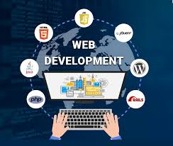

Bienvenue sur mon portfolio
Découvrez mes compétences et mes réalisations.
À propos de moi
Je suis un développeur web passionné, avec une expertise dans les technologies modernes. Découvrez mon parcours et mes compétences.
En savoir plusMes formations

Développement web
J'ai suivi une formation complète en développement web, couvrant HTML, CSS, JavaScript, et les frameworks les plus populaires.
Analyse de données
J'ai également acquis des compétences en analyse de données, utilisant des outils comme Python et SQL.
Mes projets
Voici quelques-uns de mes projets les plus récents :